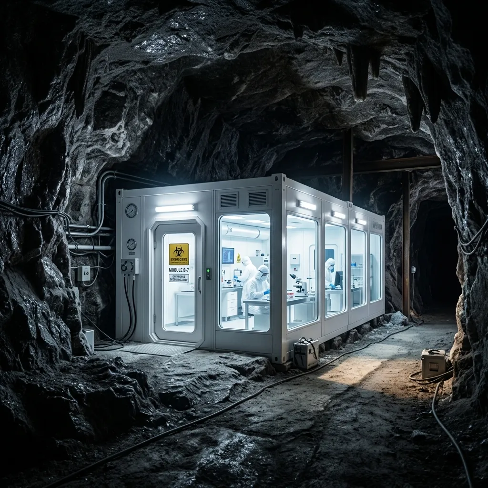
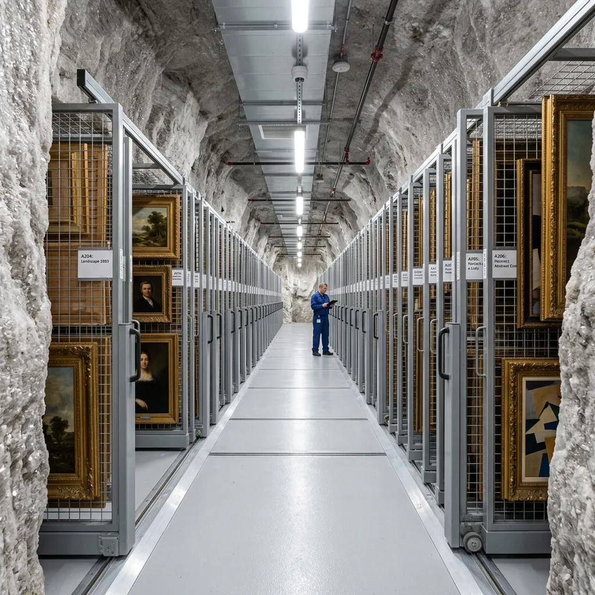

Subterranean Art Conservation.
Deep-strata, clinical preservation and diagnostics for volatile contemporary art, located 150 metres below Cheshire.
Contemporary art frequently utilizes highly unstable, hygroscopic, or rapidly degrading organic materials. Surface-level storage facilities struggle to combat daily barometric fluctuations, urban micro-vibrations, and atmospheric contaminants. Isocline Preservation removes these variables completely. Housed inside an active rock salt mine, our facility provides a naturally sterile, UV-free, and seismically dead environment. We offer museum-grade climate stability and clinical restoration laboratories to ensure that complex, multi-media installations remain in a state of absolute suspended animation, completely isolated from surface degradation.
Explore The VaultsThe Clinical Advantage of Sub-Strata Archiving
The preservation of fragile modern canvas, degrading synthetic polymers, and delicate kinetic sculpture requires a total absence of atmospheric interference. Standard commercial art logistics rely on energy-intensive HVAC systems that constantly fight surface-level weather patterns, inevitably creating micro-fluctuations in relative humidity. These fluctuations cause imperceptible expansion and contraction in organic materials, accelerating chemical decay and pigment delamination over time.
By positioning our primary archiving vaults 150 metres deep within the Winsford rock salt strata, Isocline Preservation inherits a naturally occurring ambient temperature of 14°C and a static relative humidity. We augment this geological baseline with pharmaceutical-grade HEPA filtration and positive-pressure isolation chambers. There is zero natural ultraviolet radiation and zero traffic-induced seismic vibration. This clinical, deep-earth environment halts the off-gassing of volatile organic compounds and arrests the breakdown of sensitive resins, providing registrars and conservation scientists with the most stable, inert holding conditions currently engineered in the United Kingdom.

The Geological Baseline
The foundational advantage of our facility lies within the inherent physical characteristics of the Cheshire halite strata. Formed over two hundred million years ago during the Triassic period, this massive geological deposit acts as a natural desiccant. The raw rock salt actively absorbs any excess airborne moisture, passively maintaining a sterile, ultra-dry microclimate without the mechanical strain required by conventional above-ground HVAC systems. This geological baseline effectively neutralises the threat of hygroscopic expansion within organic pigments and canvases. Furthermore, our subterranean location ensures a total absence of natural ultraviolet light. Even microscopic exposure to UV radiation initiates irreversible photochemical degradation in sensitive polymers and synthetic resins commonly found in contemporary mixed-media installations. By eliminating this exposure entirely, our archival chambers provide an absolute void of photodegradation. The density of the surrounding halite also provides unparalleled acoustic and seismic insulation, isolating hyper-sensitive kinetic sculptures from the urban micro-vibrations that plague surface-level museum storage.
Sterile Intake Protocols
Before any installation reaches the sub-strata vaults, it must undergo our rigorous transit and decontamination procedure. The process begins at surface level, where specialized transport vehicles interface directly with our primary heavy-duty service elevator. Engineered to securely transport volumetric loads weighing up to 5 tonnes, this industrial shaft descends 150 metres at a precisely controlled velocity to prevent rapid barometric shock to fragile canvases. Upon reaching the subterranean level, all crated works immediately enter a strict 24-hour acclimatisation lock. This staging area allows the materials to gently adapt to the ambient 14°C temperature. Simultaneously, our conservation scientists initiate comprehensive biological pest screening. We utilize targeted anoxia treatments—flooding specialized isolation chambers with pure nitrogen—to eradicate any latent biological threats or woodboring insects before they can compromise the sterile perimeter of the main storage sectors.
Institutional Accreditations
Isocline Preservation operates in strict compliance with the highest international museum loan standards for climate stability and physical security. Our clinical infrastructure allows us to maintain the demanding environmental tolerances required by premier global institutions. We serve as a trusted custodial partner for the National Archival Syndicate, managing their most volatile contemporary assets. Furthermore, we hold specialized accreditation from the European Kinetic Art Trust for our vibration-isolated holding cells. Our subterranean facility currently encompasses over 45,000 cubic metres of active, climate-regulated storage, distributed across a network of modular cleanrooms. This expansive footprint allows us to accommodate monumental sculptural works and sprawling mixed-media installations that surface-level registrars simply cannot securely house. Every aspect of our operation is subjected to independent biannual audits, ensuring continuous adherence to exacting conservation science protocols.